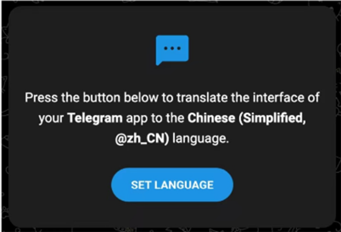
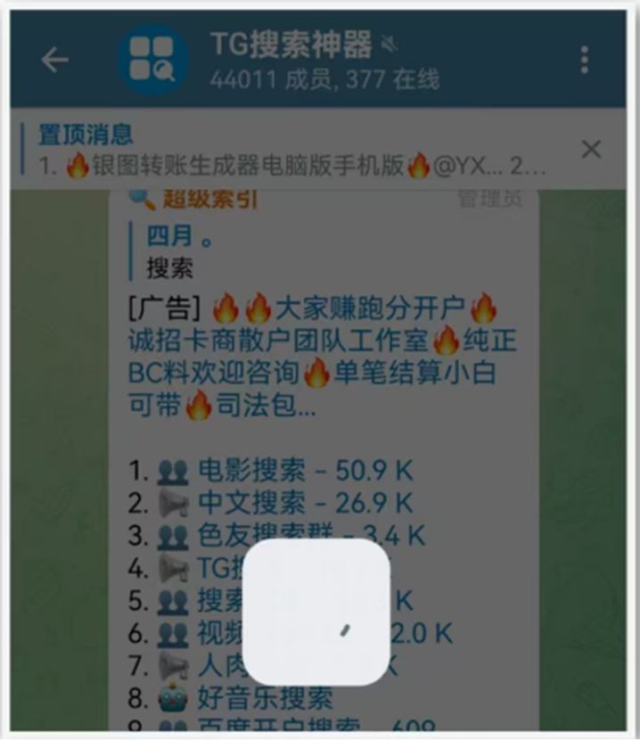
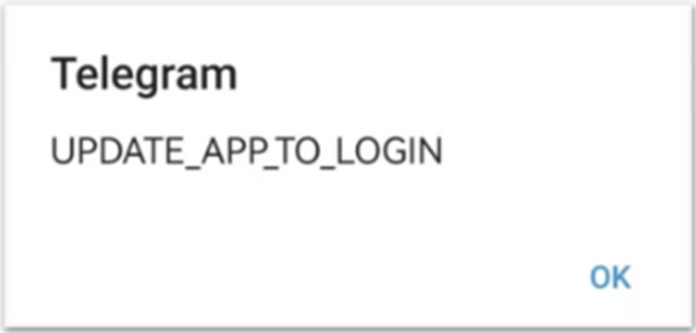
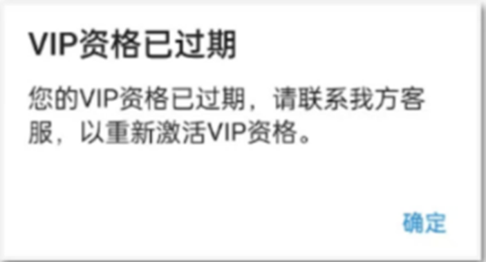
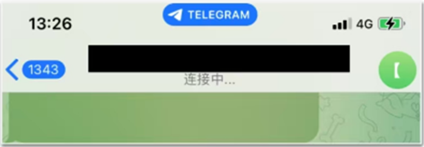
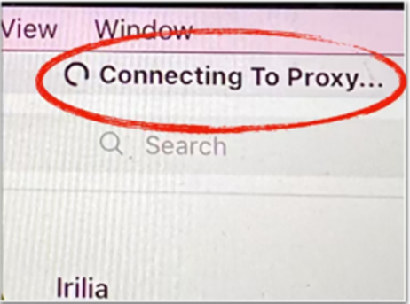

返回
欢迎查看常见问题
智慧服务，让您使用更简单

如何更好的使用 Telegram
通过赛盾 VPN 访问 Telegram(电报)遇到的问题，您可以按照文章内容解决问题
Telegram 又称作电报，CN地区的小伙伴可以通过赛盾VPN(官网.{{webLink}})加速后进行访问，因 Telegram 有些自带的限制，可能会导致以下几种情况发生，您可以跟着咱们提供的方法操作，从而排解疑难
一、Telegram 如何设置中文
说明:Telegram 本身没有适配中文，通过中文插件就可以将 Telegram 顺利设置，咱们也在网路论坛中挑选出最简单方法,您可以根据以下方法进行设置。
解决办法:您可以在 Telegram(官网https://telegram.orgL)先下载需要的版本后，点击https://t.me/setlanguage/classic-zh-cn 插件→ SETLANGUAGE 跳转就能够对当前的语言设置为中文。

二、Telegram 群组不断转圈
说明:此情况是 Telegram 的限制，一天内若访问超过200个群组或者频道(点击打开就算访问，不需要加入)，则会被限制24小时，被限制后无法通过链接打开任何群组或者频道。
解决办法:只能等待24小时后再尝试访问或加入。

三、Telegram 提示更新软件后再登入
说明:您当前 Telegram 版本低需进行更新。
解决办法:您可以在Telegram(官网:https://telegram.orgL)下载对应的最新版本更新即可解决问题。

四、Telegram 提示VIP资格以过期
说明:Telegram 官方已推出付费会员功能(例如:提高上传档案的容量)需要进行付费，此情况为试用期结束了或已经到期跳出的提示
解决办法:您必须续费 Telegram 会员功能才有办法重新启用功能，若您不需要 VIP 功能可不进行续费。

五、Telegram 群组显示连接中
说明:若您 Telegram 加入过多群组或是存在大量下载的进程，可能会导致访问时群组上方显示连接中，无法马上看见信息内容(如图下)。
解决办法:解决办法:找到 Telegram 导航 → 找到到右下角的“settings”选项卡→ data and storageautomatic media download→将里面的内容全部关闭即可。

六、Telegram 提示:Connecting To Proxy

解决办法:
1.退出 Telegram重新打开软件
2.登入介面的右上角找到 Setting
3.找到 Connection type 看是否设置了代理
4.正常默认情况会显示 Use system proxy settings
5.若都正常请用户检查设置中是否有代理
6.有的话会显示设置的 IP
7.删除后再尝试即可
注:若您在下载和使用过程中有任何问题，您随时可以发送邮件给 {{kfEmail}}，将由专业的客户服务人员帮助您获取到最新版本的软件。